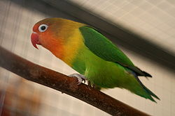
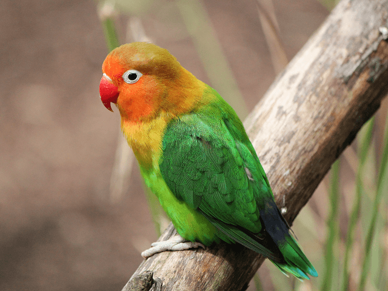

Agapornis je rod afrických papagájov, v ktorom je zahrnutých deväť druhov. Slovenský aj vedecký názov rodu Agapornis je spojením gréckych slov agape=láska + ornis=vták a má vystihovať jeho silné socializačné správanie a zvyk prežívať v stabilných pároch. Agapornisy v priemere dosahujú dĺžku 13-17 cm a hmotnosť okolo 40-60 gramov. Pre tieto papagáje je charakteristickým znakom malá, zavalitá postava a krátky, tupo zakončený chvost. Vďaka svojim telesným proporciám sú agapornisy zaraďované medzi najmenšie druhy papagájov na svete.Agapornisy majú výrazný zobák a viacero ich druhov má okolo očí kontrastné lemovanie. U papagájov tohto rodu dominuje pestré plošné sfarbenie jednotlivých partií tela v odtieňoch zelenej, červenej, modrej či v škále žltých farieb. V sfarbení agapornisov sa vyskutuje mnoho rôznych mutácií. Pohlavný dimorfizmus u väčšiny papagájov rodu agapornis je nevýrazný. Pohlavie sa dá dobre rozlíšiť iba u troch druhov: agapornisa etiópskeho, agapornisa šedohlavého a u agapornisa oranžovohlavého. Vo voľnej prírode prežívajú agapornisy v malých kŕdľoch a živia sa väčšinou ovocím, zelenou potravou, niektorými trávami a semenami. Agapornis etiópsky sa živí aj hmyzom a plodmi figovníka.
 